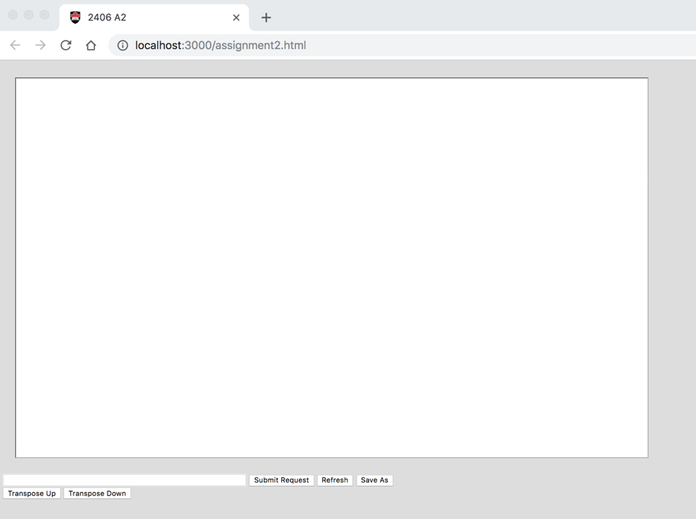
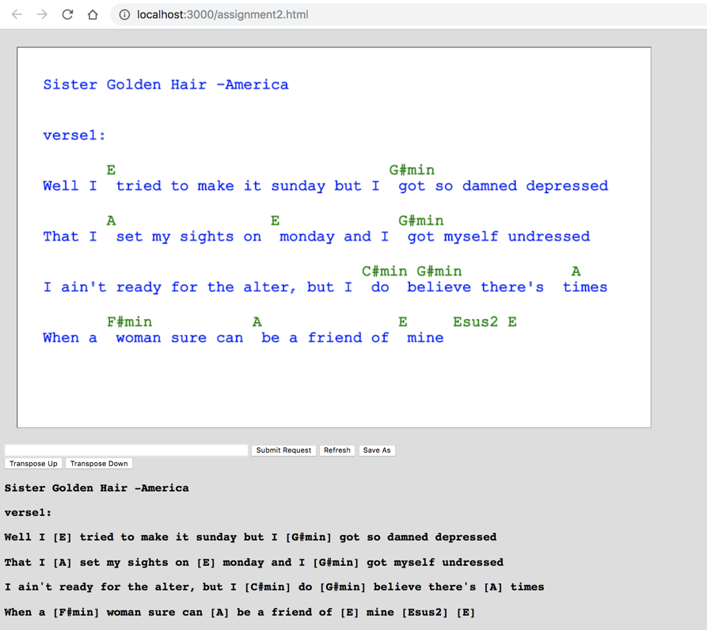
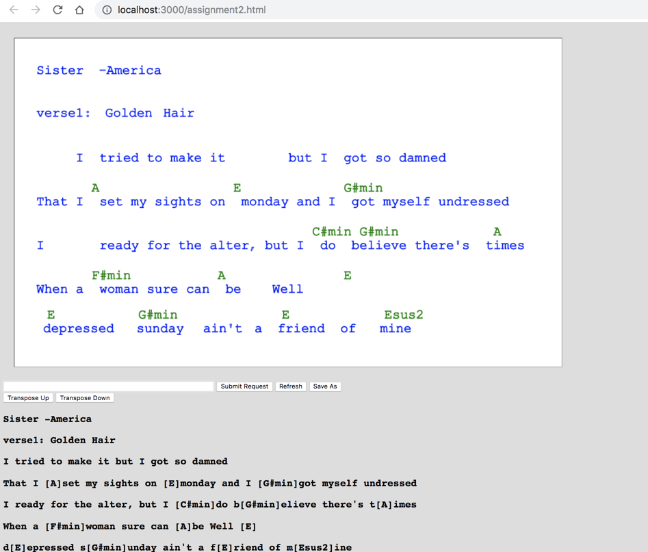

COMP 2406 Fall 2018 Assignment 2:
Javascript Single Page App -Part II
Due Tue. Oct. 16 by 10:00pm in culearn
Assignment Revisions and Corrections will be noted here.
In this assignment you are going build part II of the small single-page web app started in assignment 1. This time we will make the full "round trip" by having the server serve the contents of files to the client editor that can modify the contents and send them back to the server to be stored as modified or new files.
We will still just use the native capabilties of Node.js and javascript.
Specifically you will build an app that allows a user to open a chord pro formatted (chords and lyrics) text file hosted on a node.js server, modify and transpose them, and then send the modified contents back to the server to be stored as files.
The components are:
Server: Built with just Node.js and its built-in modules (e.g. http, path, fs, url) and whatever javascript you want to write. (We are not allowing extra npm modules yet in this assignment; only what is built into node.js itself.)
Client: Browser that is provided with a web page from the server consisting of html, css, javascript and jquery. You can use which ever of these your want.
Assignment Restrictions:
Technology Restrictions: Because each layer of node.js/javascipt-based technologies, like npm modules or the express.js framework, solves many problems you encounter, in this assignment we will not allow their use yet. In later assignments we will bring these in and focus on new challenges. So pay attention to the technology restrictions in the various assignments in the course.
Assignments may be done in pairs: If you want to work with a partner you can. Please only submit one copy to culearn with both your names on it. (In the past we have had pairs who each thought the other member would submit and so nothing got submitted and both got zero.)
Marking: This assignment is based on 16 design requirements numbered R1.1...R3.8 for a total of 32 marks.
Marks are awarded, or deducted, based on itemized requirements as follows:
| Req Type | Marking |
|---|---|
| R0.x | Assignment gets 0 if any critical submission |
| R0.x | You lose 2 marks for each good practice |
| R0.x | You earn 2 marks for each design requirement (green) satisfied and well implemented; 1 mark if it's partly met or met but not well implemented; and 0 if it's not met. |
Submission and Good Programming Practice Requirements
The following requirements pertain to all your assignments regardless of what your application is supposed to do (i.e. regardless of the design requirements). These requirements are to ensure that your code is usable, readable, and maintainable.
R0.0 UNIQUENESS REQUIREMENT. The solution and code you submit MUST be unique. That is, it cannot be a copy of, or be too similar to, someone else's code, or other code found elsewhere. You are, however, free to use any code posted on our course website as part of our assignment solution. [Assigment mark =0 if this requirement is not met.]
R0.1 CODE SUBMISSION ORGANIZATION AND COMPILATION: You should submit all the code files and data files necessary to compile and run your app. The TA's will execute your app with node app.js command unless alternative instructions are provided in the README.txt file. If you compress your submission to culearn you must use only .zip format (not .rar or .tar or whatever). Though you are permitted to write code on Windows, Linux, or Mac OS the code should be generic enough to be OS agnostic. Your code must work with at least a current Chrome browser. [Assigment mark =0 if this requirement is not met.]
R0.2 README FILE: Your submission MUST include a README.txt file telling the TA how to setup and run your app. The TA should not have to look into your code to figure out how to start up your app. Your README.txt MUST contain the following:
-
Your name, student number and email address and if you are working with a partner then their name, student number and email address as well.
-
Version: node.js version number and OS you tested on your code on.
Install: how to install needed code. This will likely look like
npm installornpm install module_name-
Launch: Instructions on how to launch your app. e.g.
node myserver.js. As the course progresses there will be more launch options to it's important to provide instructions. -
Testing: Provide Instructions on what the TA should do to run your app. e.g. visit http://localhost:3000/mytest.html?name=Louis. If your app requires a userid/password to run then provide one for the TA to use. Your server should print to the console the URL's that should be visited by the browser to demonstrate your app. List them in the order you want us to visit them:

-
Issues: List any issues that you want the marker to be aware of. In particular, tell us what requirements you did not implement or that you know are not working correctly in the submitted code. Here you are giving us your own assessment of your app.
Pay attention to any specific URL's that must be supported by your app. [Assigment mark =0 if this requirement is not met.]
R0.3 VARIABLE AND FUNCTION NAMES: All of your variables and functions should have meaningful names that reflect their purpose. Don't follow the convention common in math courses where they say things like: "let x be the number of customers and let y be the number of products...". Instead call your variables numberOfCustomers or numberOfProducts. Your program should not have any variables called "x" unless there is a good reason for them to be called "x". (One exception: It's OK to call simple for-loop counters i,j and k etc. when the context is clear and VERY localized.) Remember javascript variables don't have types which can help clarify things so choosing good names is even more important. Many functions in javascript are annonymous (have no name) and so the name of the variable that refers to them is even more important. [Minus 2 marks from assignment if this requirement is not met.]
R0.4 COMMENTS: Comments in your code must coincide with what the code actually does. It is a very common bug to modify code and forget to modify the comments and so you end up with comments that say one thing and code that actually does another. By the way, try not to over-comment your code but instead choose good variable names and function names that make the code more self commenting. Don't be afraid to create local variables so that the variable name provides more clarity. [Minus 2 marks from assignment if this requirement is not met.]
R0.5 CITATION REQUIREMENT: If you use code from other sources you should cite the source in comments that appear with the code. If the source is an internet website then put the URL in the comments. You may use bits of code from outside sources but this may not form the complete solution you are handing in.You DON'T have to cite demo code we provide on the course web site or with tutorials and assignments, however that code should not be used for things you post publicly (like on GitHub). [Minus 2 marks from assignment if this requirement is not met.]
VERY IMPORTANT: Any sample code fragments provided may have bugs (although none are put there intentionally). You must be prepared to find errors in the requirements and sample code. Please report errors so they can be fixed and an assignment revision posted.
Application Design Requirements
This is a continuation of work started in Assignment 1 and tutorial 03. In tutorial 03 you will have done an exercise with node.js to open and read a chord pro text file as shown below and display it on the console with the chord symbols displayed above the lyrics (instead of imbedded within them). Below is an example of the chord pro text file and the console display similar to tutorial 03.
Chord Pro Text File:
Sister Golden Hair -America verse1: Well i [E] tried to make it sunday but i [G#min] got so damned depressed That i [A] set my sights on [E] monday and i [G#min] got myself undressed I ain't ready for the alter, but i [C#min] do [G#min] believe there's [A] times When a [F#min] woman sure can [A] be a friend of [E] mine [Esus2] [E] verse2: Well i [E] keep on thinkin bout you sister [G#min] golden hair surprise That i just can't live without you can't you [G#min] see it in my eyes I've been [A] one poor corre[F#min]spondent, i've been [C#min] too too [G#min] hard to [A] find But it [F#min] doesn't mean you [A] ain't been on my [E] mind [Esus2] [E] chorus: Will you [B] meet me in the middle will you [A] meet me in the [E] end Will you [B] love me just a little just en[A]ough to show you [E] care Well i [F#min] tried to fake it i [G#min] don't mind sayin i [A] just can't make it repeat intro, then verse 2, then chorus, then they do this doo-wop thing that uses the chorus (B - A - E) thing
Console output from Tutorial 03:

For this assignment we want you to build a client-server single page app so that the chords are displayed properly above the lyrics in a browser web page canvas. Moreover, once displayed, the user should be able to drag individual words or chord symbols around with the mouse. Then they should be able to submit the altered arrangement back to the server which should store the updated results in the chord pro file format possibly replacing the original data. The user should also be able to transpose the song to a new key (as done in assignment 1) but this time store the transposed result to the server.
This is again intended to be a single page app (where the user just makes one request to a particular URL) based on the HTML5 canvas app presented in tutorial 02 and assignment 1.
To do this assignment you need to be able to do things like the following.
Open and read files on the server.
Send JSON objects between browser and server.
Convert javascript objects to JSON strings and vice versa.
Send both GET or POST requests from client to server and extract the response data.
Receive GET and POST requests from the client and formulate an HTTP response.
Send HTML and javascript to the browser page to react to mouse events and drag items around.
Open and write files on the server.
So the challenge will be to combine the individual capablities from the tutorial and first assignment and class demo code to form the application and also solve a few additional problems that inevitably fall through the cracks. You are free to make use of any code we post on the course website as part of your assignment solution including the solution code we post for Assignment 1.
1) Server-Side Requirements
R1.1 The server code should use only javascript and node.js build-in modules (not use any external npm modules or the express.js framework).
R1.2 The server should have a directory of chord pro formated text files (use .crd or .txt extension as you prefer). So the server does not store data in an intermediate format like JSON strings -it stores data as chord-pro text files.
R1.3 The server should allow a client, via a browser, to request a particular song based on song title. The markers should be able to add new files to your directory if they want.
R1.4 The server should accept updated data from the client and use that data to overwrite the contents of existing chord pro song files or create a new file based on the file name. Read the API documentation on the node.js fs file module to see how to write to a file. It's basically using a call like:
fs.writeFile(saveAsFilePath, fileDataString, function(err, data) { ... })
Also, the server-side file reading and writing must be asynchronous. For example use the readFile() and not the readFileSynch() file system functions of node.
R1.5 Server should be hosted on port 3000 and be reachable from a browser on the same machine by visiting http://localhost:3000/assignment2.html (Your ReadMe.txt file should also tell the TA what specific URL to use to test your application.)
2) Client-Server Data Exchange
R2.1 The server should send the html and other files representing the app when the user visits http://localhost:3000/assignment2.html
R2.2 The exchange of chord/lyric data between client and server should be in the form of JSON object strings.
R2.3 The data that the client sends to the server for storage should be in an HTTP POST message (i.e. not a GET message).
3) Client Requirements
R3.1 The client webpage should have an HTML5 canvas area, a text input, and five buttons: "Submit Request", "Refresh", "Save As", "Transpose Up", and "Transpose Down" and might look something like the following when the app launches:

R3.2 The client should be able to request a song from the server by typing the song title in the text field and clicking the "Submit Request" button. If the song is available on the server the download song should be displayed for the client as shown below. Specifically the lyrics are shown with the chords above them in the canvas (e.g. from tutorial 03) at the proper location. The original chord pro text should be shown as individual paragraph lines below the canvas. (This should be done by having the client-side javascript add <p> elements to the current web page -as was done in tutorial 02 and assignment 1.)

R3.3 The user should be able to drag the chord symbols and words around with a their mouse. Moreover the user should be able to drag from anywhere in the word or chord symbol, not just at the begining of the word.
R3.4 Whenever the user presses the "Refresh" button the text below the canvas should reflect the current contents for the canvas in chord-pro format. That is, should reflect how the user dragged the chords and lyrics around as shown below: (This will be the fun part -trying to figure out from the position of words which ones belong to the same line of text and such.)

R3.5 The user should be able to transpose a song up and down by halfsteps (semi tones) with the transpose up and transpose down buttons -similar to assignment 1. Transpostion should be able to handle both sharp and flat chord names and be able to handle slash chords. A slash chord has two letter names in the same chord, for example Cm7/G. One of the sample songs supplied with the assignment "Never My Love" has both a Bb chord and some slash chords. Your transposition can choose either sharp or flat spellings of chords. For example you could use an A# in place of a Bb or vice versa.
R3.6 If the user has transposed the song and presses the Refresh button the transposed version of the song should be reflected in the paragraph below the canvas. (The user should also be able to save the transposed version of the song as per the requirements below.)
R3.7 When the user types the name of a song in the text field and presses the "Save As" button a JSON object should be sent to the server representing the current chord pro formatted song being shown on the canvas. The server should then save this new song for the user to request later (It should be possible to overwrite the original file if the user uses the title of the original song).
R3.8 The user should be able to request the song from the server that they saved with "Save As" and they should be served the new modified version of the file.
Demonstration Video
Here is a short screen capture mockup video of how the app might behave:
Additional Notes.
We've simplified the three test song files provided so they only consist of one verse or chorus of text. That is sufficient for the assignment -you don't need to use long files of the entire song.
You can use .txt extensions instead of .crd for you test files. This makes them easier to view with other apps or the browser.
I've added some chord-pro txt files in a songs directory with this assignment that you can use to test with. You can easily generate chord pro files on the http://www.chordie.com/ website. On this site you can create a songbook and add songs. When you select songs in your songbook there is an option to edit them which will show you the raw chord pro format which you can cut and paste to a text file.